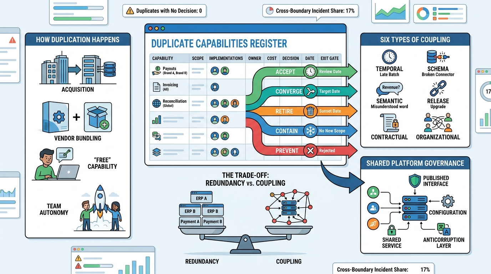

Part III — INTEGRATION: The Finance Estate as One System
Duplicates and Dependencies: The Hidden Costs of a Grown Estate

Image generated by Google Gemini (gemini-3-pro-image-preview)
Part III — INTEGRATION: The Finance Estate as One System

Image generated by Google Gemini (gemini-3-pro-image-preview)